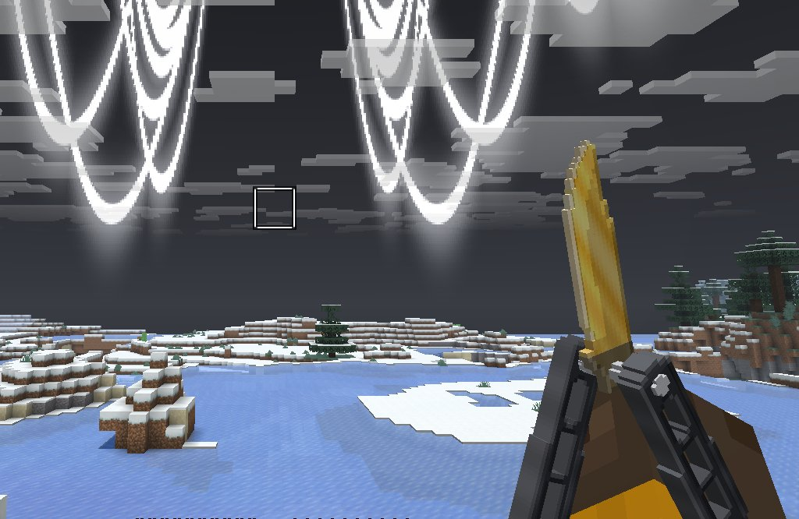
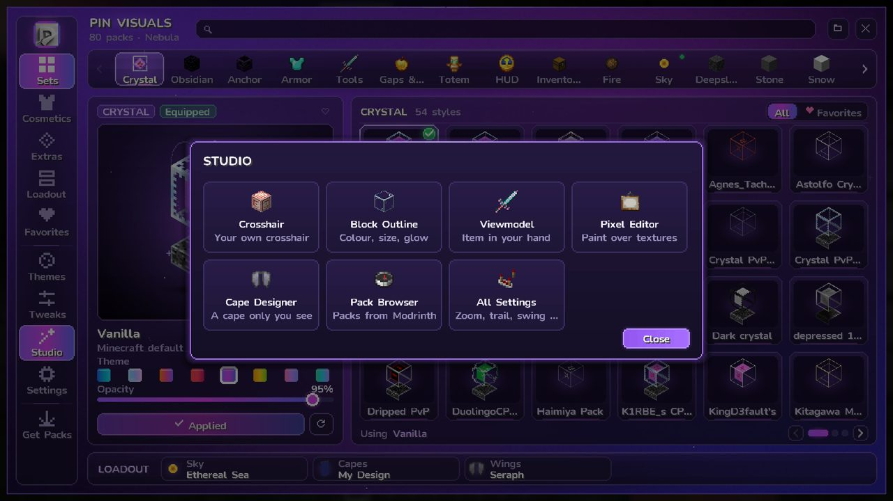
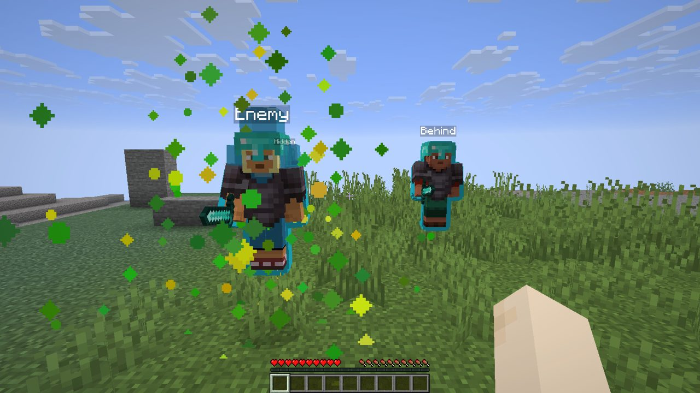
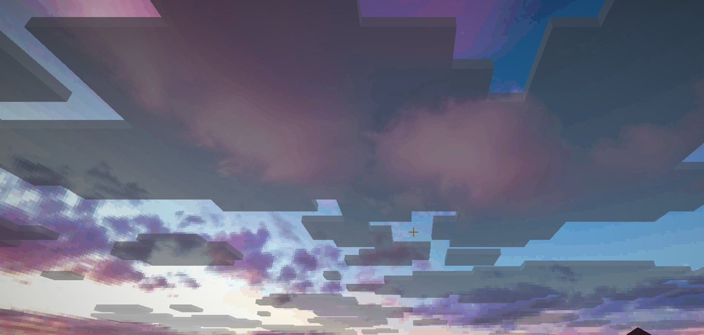
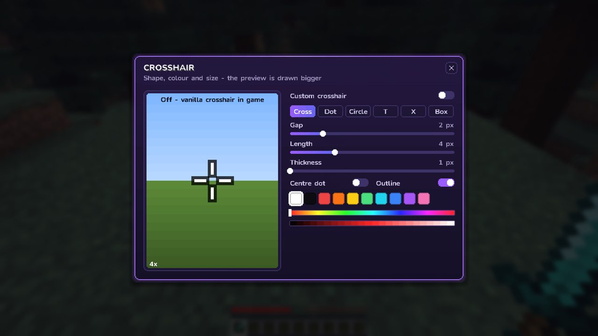

Minecraft, neu belichtet.

39 Eingriffe in das, was du siehst. Texture Packs mischen, Messer inspizieren, den Himmel selbst zeichnen. Nur auf deinem Bildschirm.
Mod herunterladenPin Visuals ist kein Client und kein Cheat. Es ist eine Sammlung kleiner Eingriffe, die nur auf deinem Bildschirm passieren: wie ein Block zerbricht, wie ein Item in die Hand gleitet, welche Farbe der Nebel hat und wie der Himmel bei Sonnenuntergang aussieht. Der Server merkt davon nichts.
Acht, die man sofort sieht.
Fahr mit der Maus über einen Eintrag, um die Tafel dazu zu sehen. Die übrigen 31 stehen weiter unten im Register.
- 01Knife & InspectButterfly, Karambit, Bayonet, Flip Knife in sechs Finishes. Zuklappen, Aufschnappen, Rollover.Player
- 02AuraEin Ring, der auf Hüfthöhe um dich schwebt. Sechs Lichter kreisen mit.Player
- 03Block Break AnimationEin Batterie-Balken füllt sich von Rot nach Grün, statt dass der Block reißt.Render
- 04Texture Pack ManagerKristalle aus einem Pack, Schwerter aus dem anderen. Jeder Stil mit 3D-Vorschau.Packs
- 05AtmosphereFarbiger Dunst und Partikel: Mystic, Ember, Frost, Sakura, Firefly.Render
- 06Player OutlineEine farbige Linie um Spieler, hinter Blöcken verdeckt.Player
- 07Spotify LyricsDer Songtext läuft synchron mit, im Bild oder in den Wolken.HUD
- 08Zoom & FreelookWeicher Zoom mit Mausrad, Umschauen ohne den Spieler zu drehen. Tasten im Menü.Render


Alles bleibt bei dir.
Cape, Flügel, Skin, Messer und Aura sieht nur, wer die Mod installiert hat, und auch dann nur am eigenen Bildschirm. Für alle anderen spielst du normales Minecraft.


Register. Alle 39.
Sortiert wie in „All Settings“ im Spiel. Jedes Feature hat eigene Regler und eine eigene Taste.
- 39Features in fünf Kategorien
- 4Minecraft-Versionen von 1.21.11 bis 26.3
- 8,3Megabyte pro Datei, Skyboxify bei 1.21.11 inklusive
- 0Mods, die der Server dafür braucht
In vier Schritten im Spiel.
- Fabric installieren
Fabric Loader 0.19.1 oder neuer. NoRisk, Modrinth und Prism können das für dich.
- Fabric API holen
Die Version, die zu deinem Minecraft passt. Steht unten bei jedem Download.
- In den mods-Ordner
Beide
.jar-Dateien nach.minecraft/modsoder ins Launcher-Profil. - O drücken
Beim ersten Start zeigt dir eine kurze Tour, wo was ist.
Die Dateien.
Eine Datei pro Minecraft-Version, alle vom 12. November 2026. Nimm die, die zu deinem Spiel passt.
- Java
- 25
- Fabric API
- 0.161.0+
- Größe
- 8,3 MB
Hauptversion. Jedes Feature ist hier im Spiel getestet.
- Java
- 25
- Fabric API
- 0.165.2+
- Größe
- 8,3 MB
Ohne Motion Blur, Swing Animation und Butterfly-Trick.
- Java
- 21
- Fabric API
- 0.141.6+
- Größe
- 8,3 MB
Bringt Skyboxify für eigene Himmel gleich mit.
Wie es gebaut ist.
Pin Visuals läuft auf Fabric und wird für jede Minecraft-Version einzeln gebaut. Getestet wird in 26.2 mit Screenshots aus dem Spiel und im NoRisk Client. Die anderen drei Versionen starten geprüft fehlerfrei.
Ist das auf Servern erlaubt?
Die Mod ändert nur, was du siehst. Manche Server verbieten einzelne Dinge wie Freelook. Jedes Feature lässt sich einzeln ausschalten.
Sehen andere meine Kosmetik?
Nein. Cape, Hut, Flügel, Skin, Aura und Messer gibt es nur auf deinem Bildschirm.
Sodium oder Iris?
Noch nicht gezielt getestet. Mit Shadern können Motion Blur und Atmosphere anders aussehen.
Wo liegen die Einstellungen?
config/pinvisuals/settings.json, Presets in config/pinvisuals/presets, die Pack-Auswahl in config/texturestudio.json.
Eigener Skin?
Lege eine 64×64-PNG als pinvisuals/skin.png in den Minecraft-Ordner und wähle „Own file“.
DrückO.
Danach öffnet sich alles, was auf dieser Seite steht.
Mod herunterladen